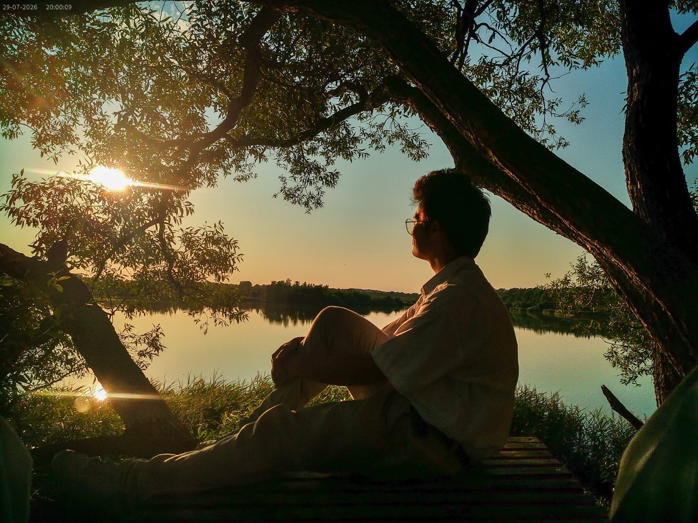
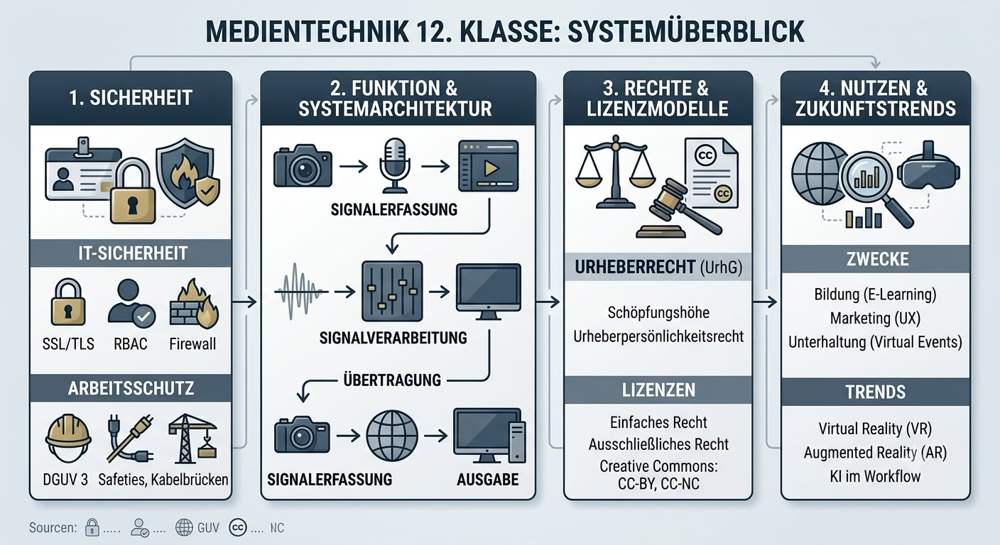

Moin, ich bin Leon.
Ich komme aus Kiel und präsentiere auf diesem Portfolio meine Arbeiten aus den Bereichen Fotografie, Design und Medientechnik sowie Einblicke in schulische Projekte, Praktika und professionelles Equipment.

Meine Schwerpunkte
📸 Fotografie & Video
Produktfotografie, Videoproduktion und professionelle Bildbearbeitung mit Adobe Lightroom & Photoshop.
⚙️ Medientechnik
Systemarchitektur, Signalfluss, professionelle Farbmodelle und Grundlagen der IT-Sicherheit.
🎬 Technik & Equipment
Einsatz von modernen Kamerasystemen, Drohnen, Feldmonitoren und leistungsstarken mobilen Workstations.
Medientechnik 12. Klasse – Kompendium
Ein detaillierter Einblick in Systemübersichten, Signalwege und technische Dokumentationen aus der schulischen Praxis.
Zum vollständigen Kompendium →
Technik & Equipment – Neu
Entdecke die Hardwarespezifikationen, Kameras und Tools, die hinter meinen Medienprojekten stehen.
Zur Technik-Übersicht →